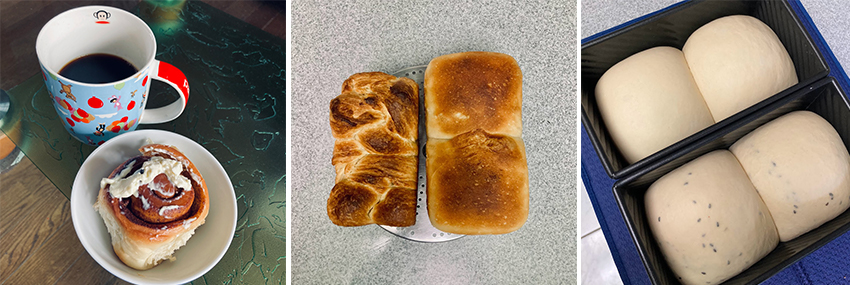
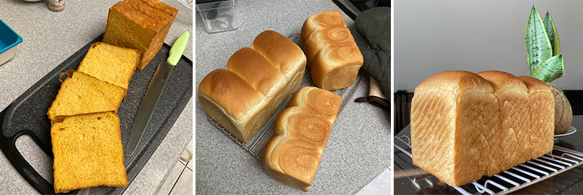

吐司之於我，意外地成了種美學。
看似簡單的事情，要真正做好其實不容易；越是基本的，背後要注意的細節更是不少。 對我來說，要製作出一條美味、外觀兼具的吐司，就是其中一個印證這段話的例子。不知道大家有沒有玩烘焙手作糕點麵包的經驗？而第一個成品又是甚麼？
談到烘焙，起初只是對麵包的喜愛。只要經過麵包店都會被濃厚的麥香和奶香吸引而停下腳步，雙眼閃爍掃過櫃上琳瑯滿目的麵包，用看得就感到洋溢幸福。但各式各樣的甜鹹口味、歐式、台式及法式麵包，最令我著迷的莫過於一條簡單的白吐司。
白吐司是麵包中最常見的，不論是在一般麵包店、便利商店或是連鎖超市等都可以見到白吐司的蹤影。簡單塗上抹醬、夾著生菜和肉蛋製成三明治或是裹上蛋液泡隔夜再用奶油香煎成法式吐司，都是經典美味；除了方便簡單，同時也能變化多樣。近年來，掀起一波吐司熱潮，包含從日本紅來台灣的「生吐司」、五花八門的爆餡吐司、千層吐司還有各種口味令人垂涎三尺的抹醬吐司等，都是從基礎的白吐司去做精進、琢磨及創意。
烘焙麵包其實要說簡單是很簡單，照著食譜，利用麵粉、酵母和水幾樣基本原料，再加入其他食材排列組合就能出爐不同種的品項。然而，若要做到口感、味道及外型兼顧並不是件容易的事情。基於對麵包的喜愛，烘焙過不同種麵包，我的第一個作品是肉桂捲，而讓我嚐盡挫敗感的大魔王就是最基本的白吐司了，成品慘不忍睹，但也讓我就此入了追求吐司美學的深坑無法自拔。
對我來說，一條好的吐司條件除了外觀要能夠長得高挺、組織細緻、咀嚼時的口感鬆軟又帶有嚼勁外，光是單吃就很好吃。而要滿足這些條件烘焙出一條好的吐司，在製作過程中要著重的細節並不少，例如：製程的控溫、揉麵團時的力道、發酵時間長短、酵母活性都影響著吐司能否長得高挺、糖的用量太多太少則會影響烤焙出來的成品色澤等，這些都是影響吐司成品外觀的重要因子。而在口感上，桿捲的圈數則影響麵包體的緊實度、雞蛋牛奶等材料可以使麵團鬆軟，奶油則可以使麵包蓬鬆不容易硬化等。另外，坊間常聽到的天然酵母、酸種酵母、液種法、中種法以及湯種法等，不同的酵母與發酵方式，也在製作麵糰過程及成品口感、香氣和保濕度的表現上，也都略有細微差異。
越是簡單的東西，越是追求細節裡的功夫。好幾次在漫長的製作與烘烤等待後，最後從烤箱拉出看到的成果不盡理想，那種一再失敗的滋味，實在不好受。不過，在每次的嘗試中，研究檢討每次失敗的可能原因，不斷的紀錄並嘗試，最終能有像樣一點的成品後，回想起來其實挺有趣的。從製作吐司的過程及經驗中，讓我得到的不僅僅是外觀、味覺上得出的吐司美學，美學背後的意義在發現並認識品嚐失敗卻願意再努力下一次的自己。起始的挫敗感，成就了每次調整的動力，這樣的意願，會留在每個行進之間，讓自己記得自己是多麼願意，在一塊貧瘠的土地上，去栽養一棵向陽光生長的樹，儘管最終不見得能見證全然盛開的枝繁葉茂，卻也從中獲得茁壯並滋養自己的養份。
我想，不同人、不同場合，不管是工作還是興趣上，都有機會驗證這樣並發現這樣的自己，只要你願意。
|  |
|  |